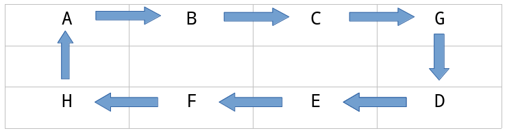

算法漫步-排班算法设计
为什么要思考排班的算法设计？当然是因为排班需要用到啊！记得当初学C语言的时候，老师说如果一段代码你写两次，最好封装成一个函数。这个函数思想深深的影响了我，以至于我把它扩展成：如果一件事情要重复做，最好做出一个可以调用的功能模块。可同时也有个问题困扰着我，要写出这个算法最少起码得花上24个小时吧，而排一个班只需要0.5个小时，写代码的时间已然够我排4年的班了…看问题不能太狭隘，虽然这个算法我可能4个月都用不到，但还有很多人用得到，只要整体节省的时间超过了我付出的时间，对社会而言就是一种进步。带着这种想法，我挖下了这个坑。这篇文章是关于排班的算法设计，至于代码实现，那真的是个大坑——得慢慢填，我也不知道这个坑什么时候能填完…….
问题
假设医院某科室，三班轮倒，如何实现自动排班算法？
建模
设日班为α（假设安排2人），中班为β（假设安排1人），夜班为γ（假设安排1人），休息为Δ（假设安排剩余人）。科室所有人设为全集合X=（ABCDEFGH），其中有些人（比如GH）不参与夜班γ，设为特殊人集合Z，正常人集合Y=X-Z。将其排入αβγΔ四种不同的状态，其实就是一个排列组合的问题。
实现
为方便解决这个问题，可以设计一种类似佛珠的闭环数据结构，假设该串佛珠有8个，一次只取4个相连的佛珠，排班就会变得如僧侣数佛珠一样。为平衡考虑，须将特殊人集合Z的元素均匀的插入到正常人集合Y中。
佛珠的数据结构如下：

接下来，让我们来数这串佛珠，也即是排班。
其中要注意的是夜班γ是最为特殊的，首先是因为排过夜班的第二天不会再参与排班，其次是某些怀孕、哺乳、大龄、新人或管理不会参与夜班。所以夜班γ必须优先考虑。
另外一点要注意的是，从哪开始的问题。第一天无所谓，但第二天的选择就会涉及公平的问题。最简单也最均衡的做法应该是：将第一天开始的佛珠（假设A第一天为夜班γ）移到最后，并将下一颗佛珠（则为B第二天为夜班γ）作为第二天的开始，如果遇到特殊的佛珠（如G或H）则轮空并选择下一颗，如此往复。具体如下：

从上可以看出，6轮为一循环（正常人集合Y的元素数），在一循环中，每人参与上班（αβγ）为3次，参与休息Δ为3次，实现了均衡。当然万恶的资本主义不会让人一年一半的时间（182.5天）都在休息，逐利的它会说你最多只能休104天，为此每天休息的不是4人。排假涉及人员的配置问题，若是安排过多人的休息意味人员的冗余将牵扯出裁员，这将会变得很严重，得先将人员配置的问题理顺才行。
假设一个遵纪守法的单位，实行8h×5d工作制，即职工每月可以休假8+天（年休104天），某部门不是实行双休而是轮休制，那么该部门应该配备多少人员呢？
设最少人员配置为x，则有：104 * x ≥ 30 / x * 12 * 8+，x ≥ √30，即最少应配备6人方能符合法律规定。
设最优人员配置为y，每日必须的人员配置为z，则有261 * y ≤ 365 * z，y ≤ 1.4z。
回到我们一开始的模型上，每日必须排班z = 4，则最优配置y = 6人，排休2人最为合理。那么z =3时，y = 5吗？因为y ≥ x ≥ √30 > 5，配置5人显然不合法。而要变得合法，显然是支付双倍工资购买职工的休息时间。但前提是职工自愿，因为不能强迫加班。
至此人员配置的问题基本理顺。
）:未完待续 To be continued…